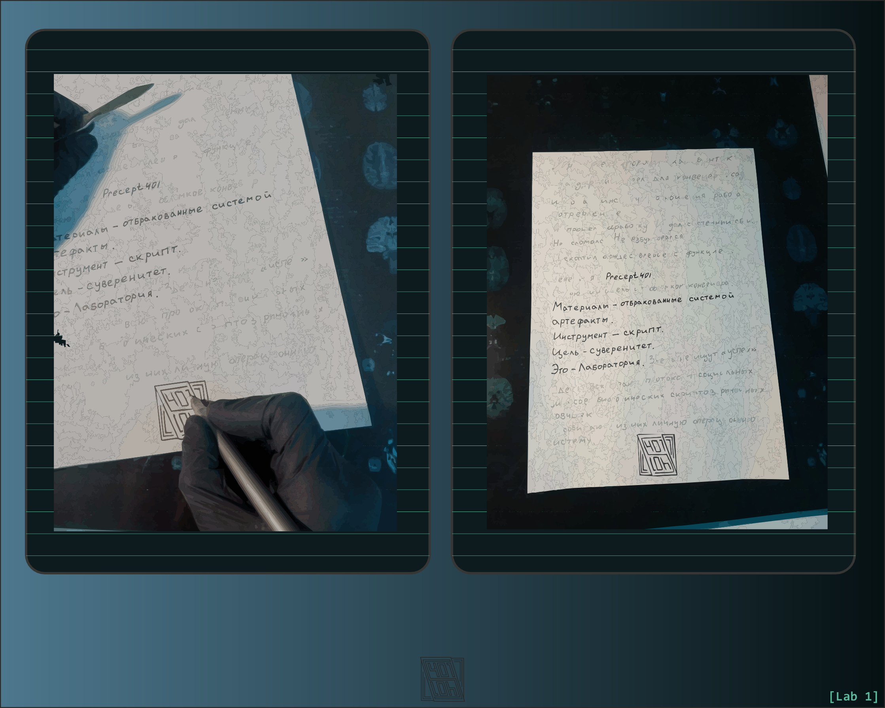
1. Фото процесса: Лист с текстом манифеста лежит на большом листе томографии мозга. Видны части мозга. На белой поверхности видны две руки в черных нитриловых перчатках. В левой руке — скальпель, правая — дописывает лого Precept 401. Манифест на листе бумаги А 4: Меня проэктировали как винтик Стандартный узел для конвеера: сад, школа, институт, отношения, работа, потребление. Я прошел обработку. И дал системный сбой. Не сломался. Не взбунтовался. Прекратил отожествление с функцией. Теперь я - *Precept401* Строю цитадель из обломков конвейера. *Материалы- отбракованые системой артефакты. * *Инструменты- скрипт. * *Цель- суверенитет. * *Это- Лаборатория. * Здесь не ищут успех. Здесь вскрывают протоколы социальных вирусов, биологических скриптов, рыночных ловушек. И собирают из них личную операционную систему. (** ТЕКСТ ВЫДЕЛЕН ЗВЕЗДОЧКАМИ на листе был выделен лайнером все остальное написано карандашом простым. Внизу по середине лого тоже лайнером выделено.
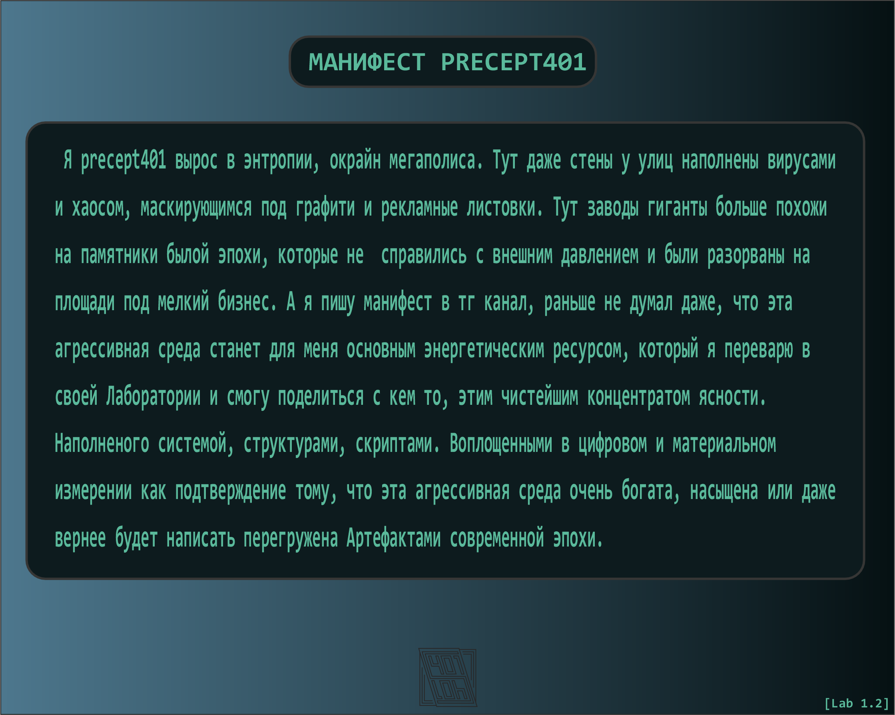
Я precept401 вырос в энтропии, окрайн мегаполиса. Тут даже стены у улиц наполнены вирусами и хаосом, маскирующимся под графити и рекламные листовки. Тут заводы гиганты больше похожи на памятники былой эпохи, которые не справились с внешним давлением и были разорваны на площади под мелкий бизнес. А я пишу манифест в тг канал, раньше не думал даже, что эта агрессивная среда станет для меня основным энергетическим ресурсом, который я переварю в своей Лаборатории и смогу поделиться с кем то, этим чистейшим концентратом ясности. Наполненого системой, структурами, скриптами. Воплощенными в цифровом и материальном измерении как подтверждение тому, что эта агрессивная среда очень богата, насыщена или даже вернее будет написать перегружена Артефактами современной эпохи.
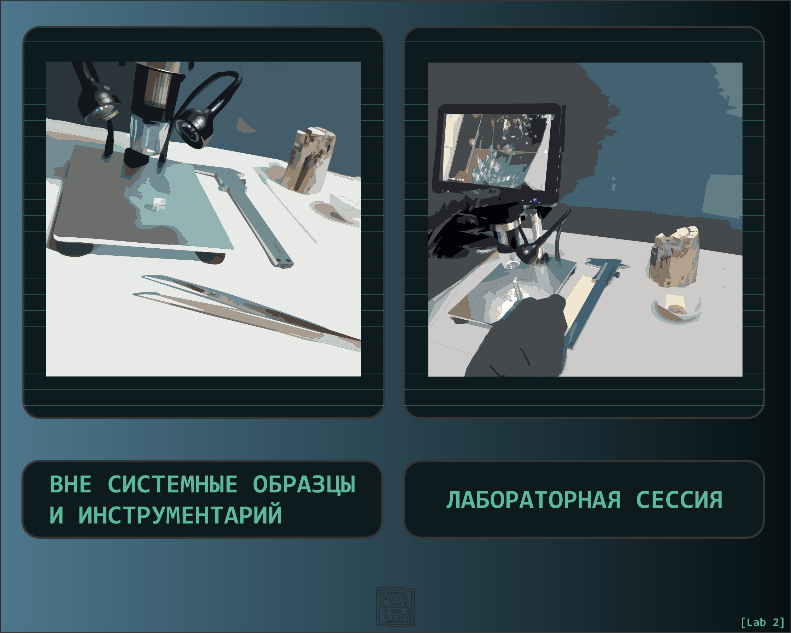
Переработанные фото в вектор. Композиции: 1) Вне системные опразцы и инструментарий. 2) Лабораторная сессия.
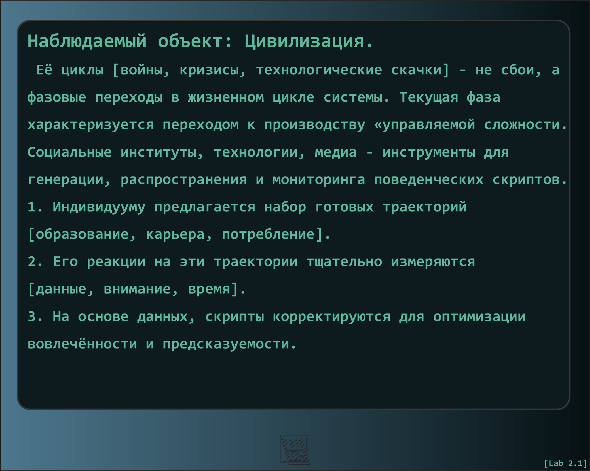
Наблюдаемый объект: Цивилизация. Её циклы (войны, кризисы, технологические скачки) - не сбои, а фазовые переходы в жизненном цикле системы. Текущая фаза характеризуется переходом к производству "управляемой сложности". Социальные институты, технологии, медиа - инструменты для генерации, распространения и мониторинга поведенческих скриптов. 1) Индивидууму предлагается набор готовых траекторий (образование, карьера, потребление). 2) Его реакции на эти траектории тщательно измеряются (данные, внимание, время). 3) На основе данных, скрипты корректируются для оптимизации вовлечённости и предсказуемости.
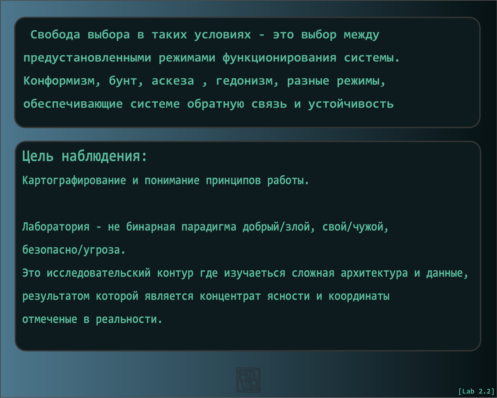
Свобода выбора в таких условиях - это выбор между предустановленными режимами функционирования системы. Конформизм, бунт, аскеза, гедонизм, разные режимы, обеспечивающие системе обратную связь и устойчивость. Цель наблюдения: Картографирование и понимание принципов работы. Лаборатория - не бинарная парадигма добрый/злой, свой/чужой, безопасно/угроза. Это исследовательский контур где изучаеться сложная архитектура и данные, результатом которой является концентрат ясности и координаты отмеченые в реальности.
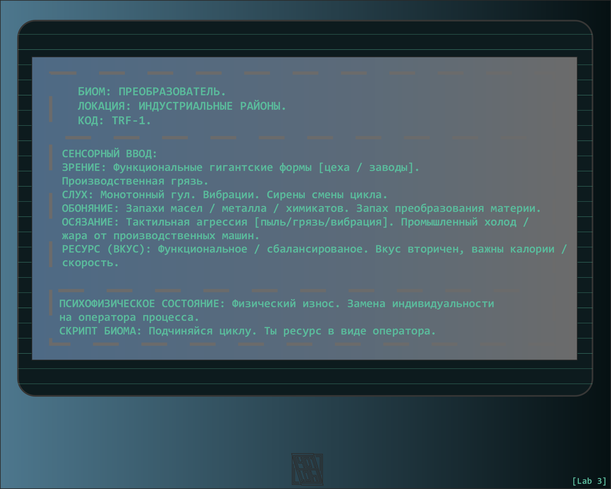
БИОМ: ПРЕОБРАЗОВАТЕЛЬ. ЛОКАЦИЯ: ИНДУСТРИАЛЬНЫЕ РАЙОНЫ. КОД: TRF-1. СЕНСОРНЫЙ ВВОД: ЗРЕНИЕ: Функциональные гигантские формы [цеха / заводы]. Производственная грязь. СЛУХ: Монотонный гул. Вибрации. Сирены смены цикла. ОБОНЯНИЕ: Запахи масел / металла / химикатов. Запах преобразования материи. ОСЯЗАНИЕ: Тактильная агрессия [пыль/грязь/вибрация]. Промышленный холод / жара от производственных машин. РЕСУРС (ВКУС): Функциональное / сбалансированое. Вкус вторичен, важны калории / скорость. ПСИХОФИЗИЧЕСКОЕ СОСТОЯНИЕ: Физический износ. Замена индивидуальности на оператора процесса. СКРИПТ БИОМА: Подчиняйся циклу. Ты ресурс в виде оператора.
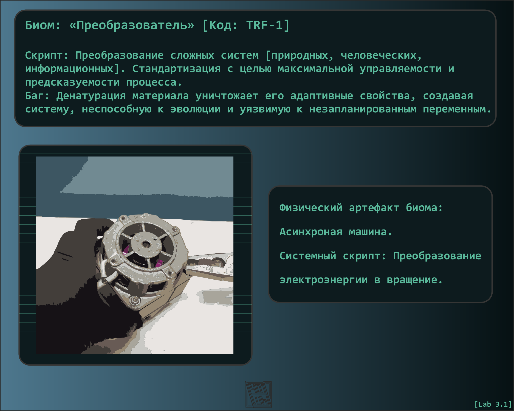
Биом: «Преобразователь» [Код: TRF-1] Скрипт: Преобразование сложных систем [природных, человеческих, информационных]. Стандартизация с целью максимальной управляемости и предсказуемости процесса. Баг: Денатурация материала уничтожает его адаптивные свойства, создавая систему, неспособную к эволюции и уязвимую к незапланированным переменным. Физический артефакт биома: Асинхроная машина. Системный скрипт: Преобразование электроэнергии в вращение. Переработанное фото в вектор. Асинхронный двигатель с момента появления ни как не эволюционировал только усложнился.
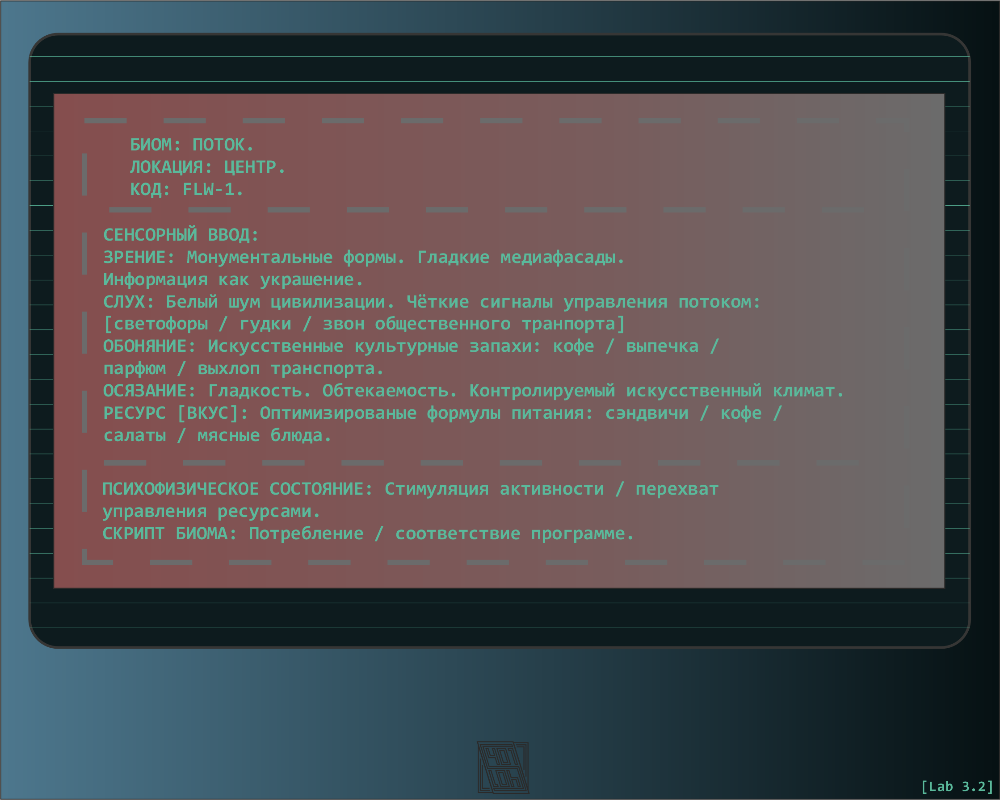
БИОМ: ПОТОК. ЛОКАЦИЯ: ЦЕНТР. КОД: FLW-1. СЕНСОРНЫЙ ВВОД: ЗРЕНИЕ: Монументальные формы. Гладкие медиафасады. Информация как украшение. СЛУХ: Белый шум цивилизации. Чёткие сигналы управления потоком: [светофоры / гудки / звон общественного транпорта] ОБОНЯНИЕ: Искусственные культурные запахи: кофе / выпечка / парфюм / выхлоп транспорта. ОСЯЗАНИЕ: Гладкость. Обтекаемость. Контролируемый искусственный климат. РЕСУРС [ВКУС]: Оптимизированые формулы питания: сэндвичи / кофе / салаты / мясные блюда. ПСИХОФИЗИЧЕСКОЕ СОСТОЯНИЕ: Стимуляция активности / перехват управления ресурсами. СКРИПТ БИОМА: Потребление / соответствие программе.
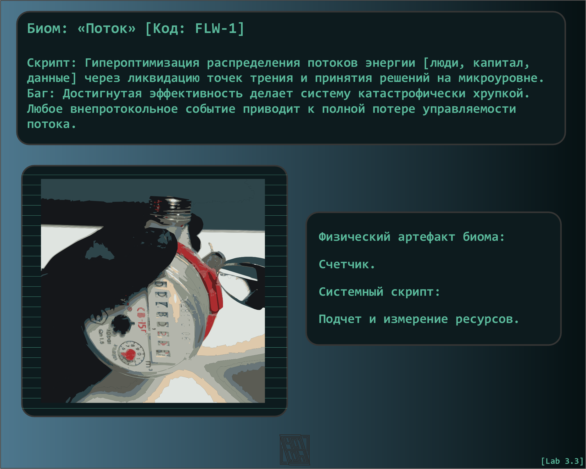
Биом: «Поток» [Код: FLW-1] Скрипт: Гипероптимизация распределения потоков энергии [люди, капитал, данные] через ликвидацию точек трения и принятия решений на микроуровне. Баг: Достигнутая эффективность делает систему катастрофически хрупкой. Любое внепротокольное событие приводит к полной потере управляемости потока. Физический артефакт биома: Счетчик. Системный скрипт: Подчет и измерение ресурсов. Переработанное фото в вектор. Счетчик-счеты потока, эволюция отсутствует.
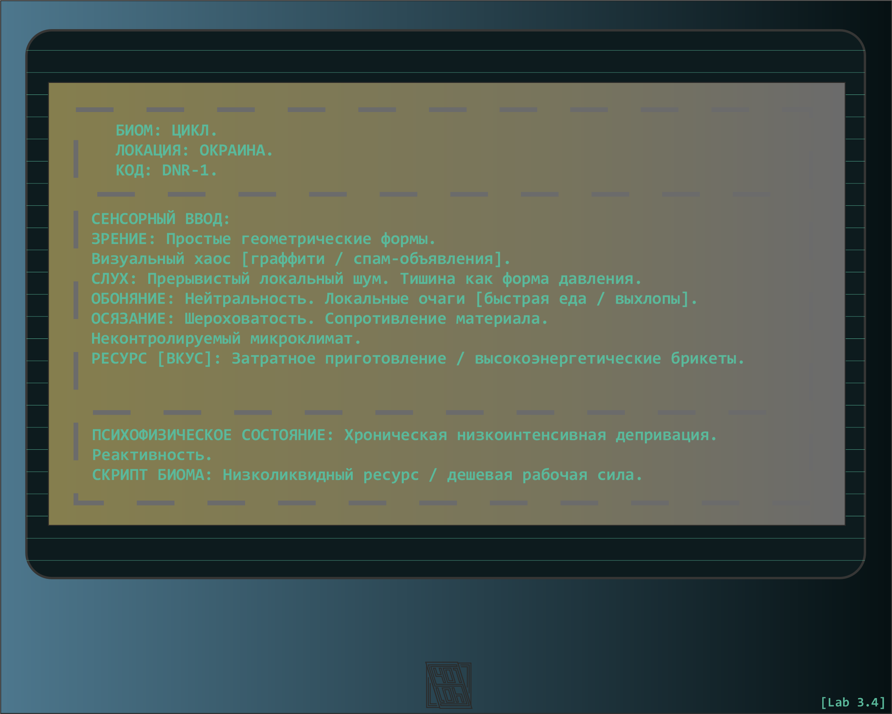
БИОМ: ЦИКЛ. ЛОКАЦИЯ: ОКРАИНА. КОД: DNR-1. СЕНСОРНЫЙ ВВОД: ЗРЕНИЕ: Простые геометрические формы. Визуальный хаос [граффити / спам-объявления]. СЛУХ: Прерывистый локальный шум. Тишина как форма давления. ОБОНЯНИЕ: Нейтральность. Локальные очаги [быстрая еда / выхлопы]. ОСЯЗАНИЕ: Шероховатость. Сопротивление материала. Неконтролируемый микроклимат. РЕСУРС [ВКУС]: Затратное приготовление / высокоэнергетические брикеты. ПСИХОФИЗИЧЕСКОЕ СОСТОЯНИЕ: Хроническая низкоинтенсивная депривация. Реактивность. СКРИПТ БИОМА: Низколиквидный ресурс / дешевая рабочая сила.
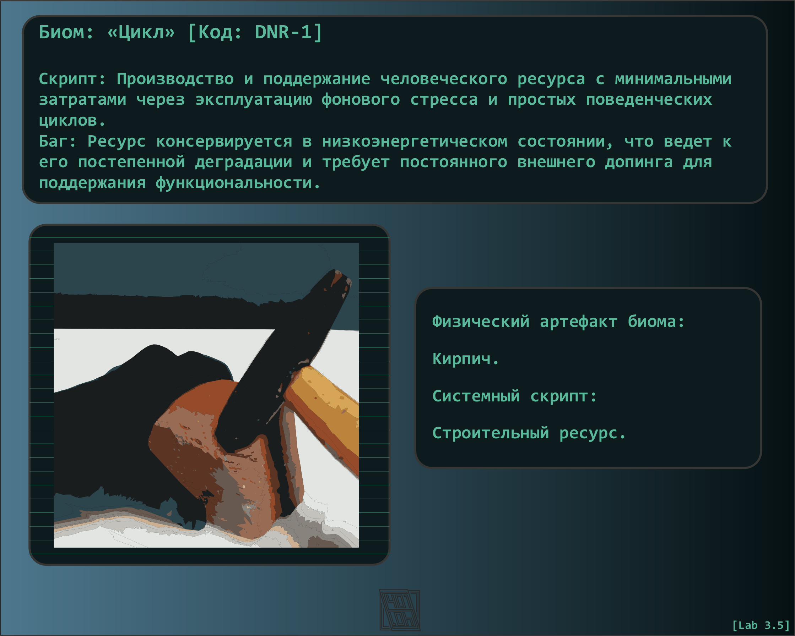
Биом: «Цикл» [Код: DNR-1] Скрипт: Производство и поддержание человеческого ресурса с минимальными затратами через эксплуатацию фонового стресса и простых поведенческих циклов. Баг: Ресурс консервируется в низкоэнергетическом состоянии, что ведет к его постепенной деградации и требует постоянного внешнего допинга для поддержания функциональности. Физический артефакт биома: Кирпич. Системный скрипт: Строительный ресурс. Переработанное фото в вектор. Кирпич - самый древний артефакт цивилизции с тысячалетней историей.
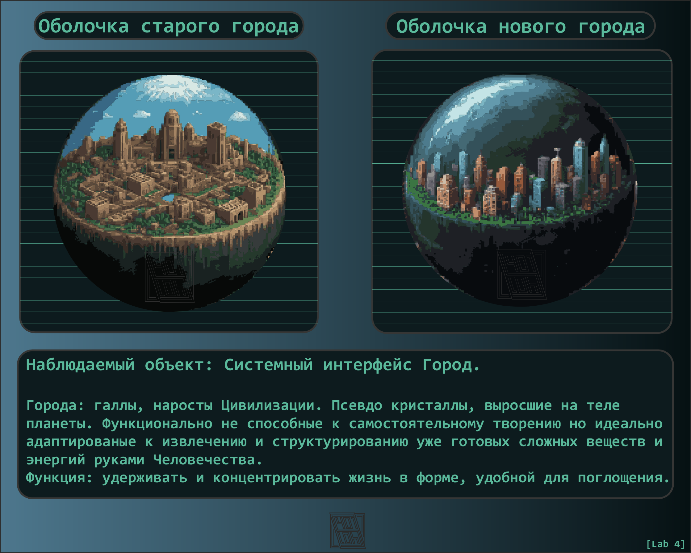
Сгенерированные ИИ изображения, переработанные в вектор: 1) Оболочка старого города. 2) Оболочка нового города. Наблюдаемый объект: Системный интерфейс Город Города: галлы, патологические наросты Цивилизации. Псевдо кристаллы, выросшие на теле планеты. Функционально не способные к самостоятельному творению но идеально адаптированые к извлечению и структурированию уже готовых сложных веществ и энергий. Функция: удерживать и концентрировать жизнь в форме, удобной для поглощения. Гигантские города - трехмерные базы учета, структурированные из ресурсов Планеты руками Человечества.
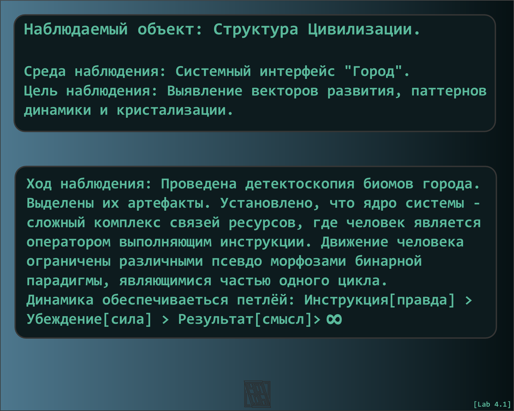
Наблюдаемый объект: Структура Цивилизации. Среда наблюдения: Системный интерфейс "Город". Цель наблюдения: Выявление векторов развития и паттернов динамики и кристализации. Ход наблюдения: Проведена детектоскопия биомов города. Выделены их артефакты. Установлено, что ядро системы - сложный комплекс связей ресурсов где человек является оператором выполняющим инструкции. Движение человека ограничены различными псевдо морфозами бинарной парадигмы являющимися частью одного цикла. Динамика обеспечиваеться петлёй: Инструкция(правда) > Убеждение(сила) > Результат(смысл)>....
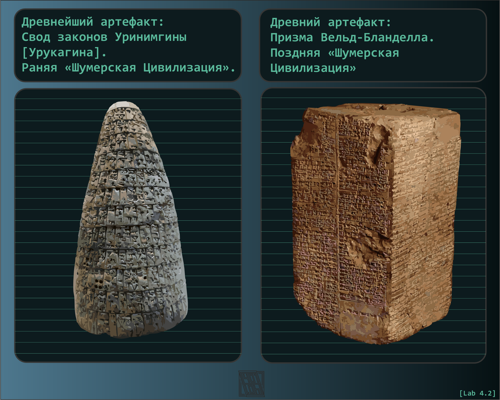
Изображение 1 взято на просторах интернета, переработанно в вектор. Древнейший артефакт: Свод законов Уринимгины [Урукагина]. Раняя "Шумерская цивилизация". Изображение 2 взято на просторах интернета, переработанно в вектор. Древний артефакт: Призма Вельд-Бланделла. Поздняя "Шумерская цивилизация".
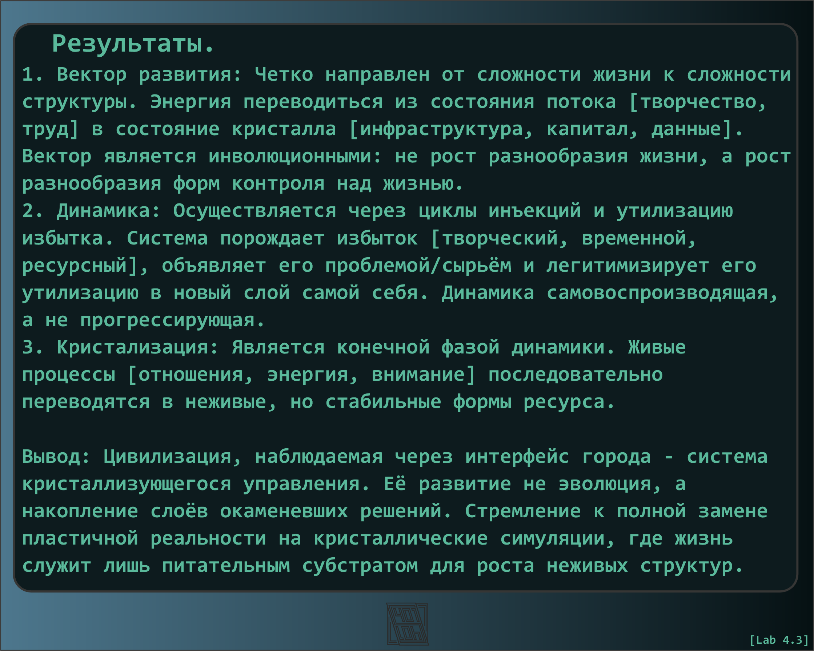
Результаты. 1. Вектор развития: Четко направлен от сложности жизни к сложности структуры. Энергия переводиться из состояния потока [творчество, труд] в состояние кристалла [инфраструктура, капитал, данные]. Вектор является инволюционными: не рост разнообразия жизни, а рост разнообразия форм контроля над жизнью. 2. Динамика: Осуществляется через циклы инъекций и утилизацию избытка. Система порождает избыток [творческий, временной, ресурсный], объявляет его проблемой/сырьём и легитимизирует его утилизацию в новый слой самой себя. Динамика самовоспроизводящая, а не прогрессирующая. 3. Кристализация: Является конечной фазой динамики. Живые процессы [отношения, энергия, внимание] последовательно переводятся в неживые, но стабильные формы ресурса. Вывод: Цивилизация, наблюдаемая через интерфейс города - система кристаллизующегося управления. Её развитие не эволюция, а накопление слоёв окаменевших решений. Стремление к полной замене пластичной реальности на кристаллические симуляции, где жизнь служит лишь питательным субстратом для роста неживых структур.
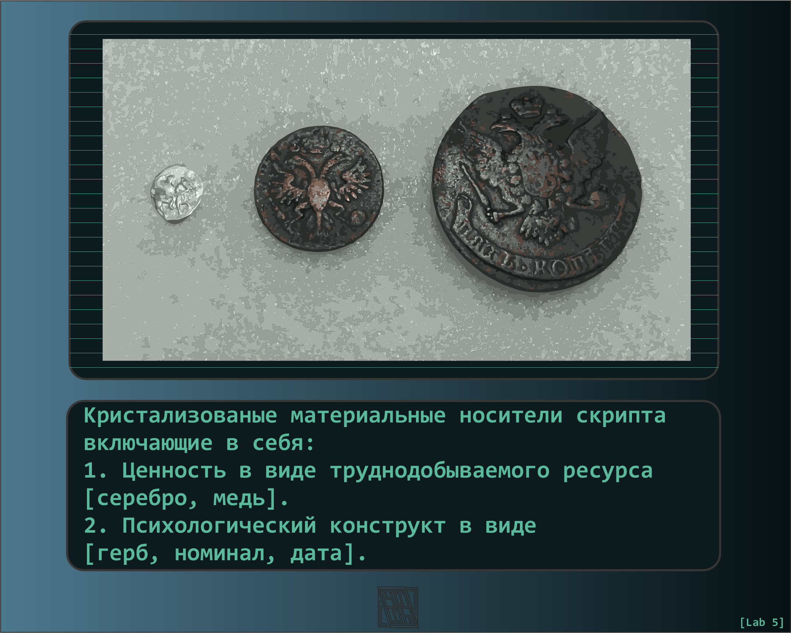
Фото монет прошедших эпох переработанных в вектор. Материальные носители включающие в себя: 1. Ценность в виде труднодобываемого ресурса [серебро, медь]. 2. Психологический конструкт в виде [герб, номинал, дата].
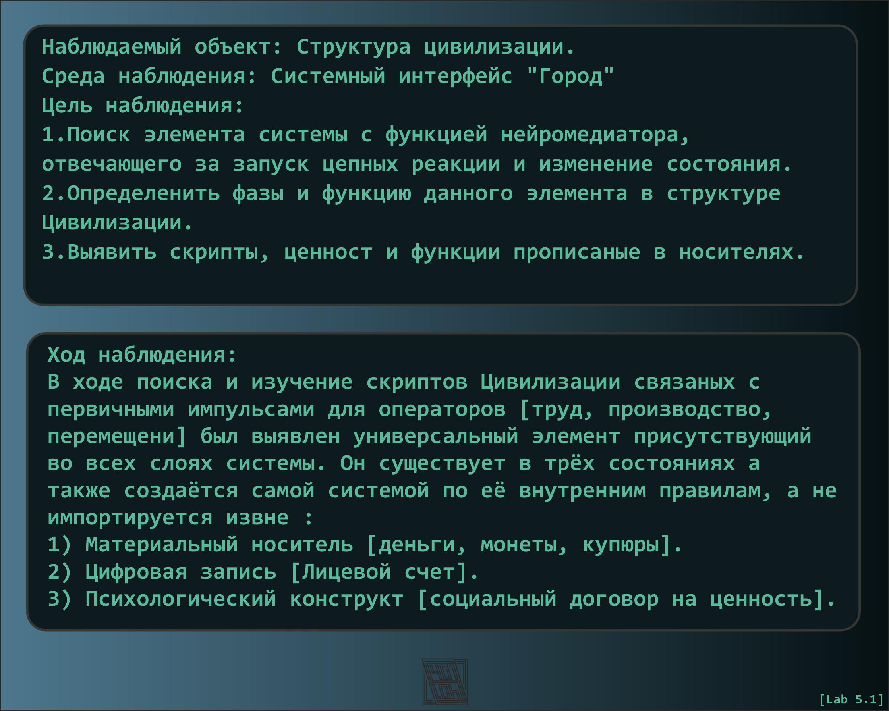
Наблюдаемый объект: Структура цивилизации. Среда наблюдения: Системный интерфейс "Город" Цель наблюдения: 1.Поиск элемента системы с функцией нейромедиатора, отвечающего за запуск цепных реакции и изменение состояния. 2.Определенить фазы и функцию данного элемента в структуре Цивилизации. Ход наблюдения: В ходе поиска и изучение артефактов Цивилизации связаных с первичными импульсами для операторов [труд, производство, перемещени] был выявлен универсальный артефакт присутствующий во всех узлах системы. Артефакт существует в трёх состояниях а также создаётся самой системой по её внутренним правилам, а не импортируется извне : 1) Материальный носитель [монета, купюра]. 2) Цифровая запись [Лицевой счет]. 3) Психологический конструкт [социальный договор на ценность].
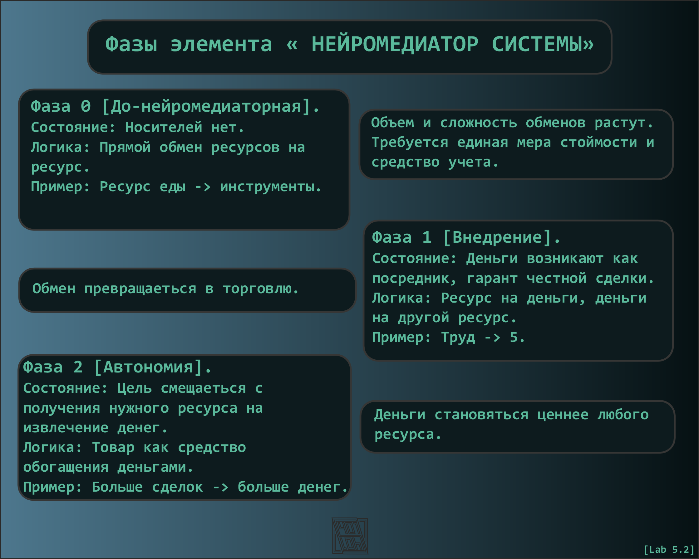
Фазы элемента "Нейромедиатор системы" Фаза 0 [До-нейромедиаторная]. Состояние: Денег нет. Логика: Прямой обмен ресурсов на ресурс. Пример: Мешок зерна -> топор. Объем и сложность обменов растут. Требуется единая мера стоймости и средство учета. Фаза 1 [Внедрение]. Состояние: Деньги возникают как посредник, гарант честной сделки. Логика: Ресурс на деньги, деньги на другой ресурс. Пример: Топор -> 5. Обмен превращаеться в торговлю. Фаза 2 [Автономия]. Состояние: Цель смещаеться с получения нужного ресурса на извлечение денег. Логика: Товар как средство обогащения деньгами. Пример: Больше сделок -> больше денег. Деньги становяться ценнее любого ресурса.
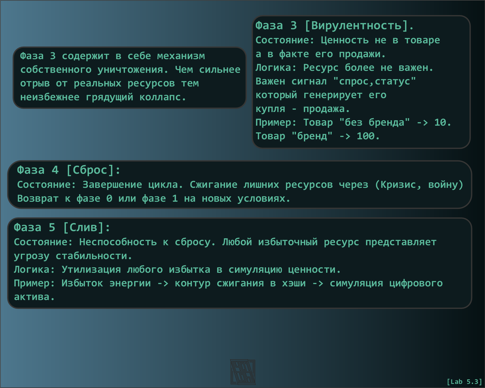
Фаза 3 [Вирулентность]. Состояние: Ценность не в товаре а в факте его продажи. Логика: Ресурс более не важен. Важен сигнал "спрос,статус" который генерирует его купля - продажа. Пример: Товар "без бренда" -> 10. Товар "бренд" -> 100. Фаза 3 содержит в себе механизм собственного уничтожения. Чем сильнее отрыв от реальных ресурсов тем неизбежнее грядущий коллапс. Фаза 4 [Сброс]: Состояние: Завершение цикла. Сжигание лишних ресурсов через (Кризис, войну) Возврат к фазе 0 или фазе 1 на новых условиях. Фаза 5 [Слив]: Состояние: Неспособность к сбросу. Любой избыточный ресурс представляет угрозу стабильности. Логика: Утилизация любого избытка в симуляцию ценности. Пример: Избыток энергии -> контур сжигания в хэши -> симуляция цифрового актива.
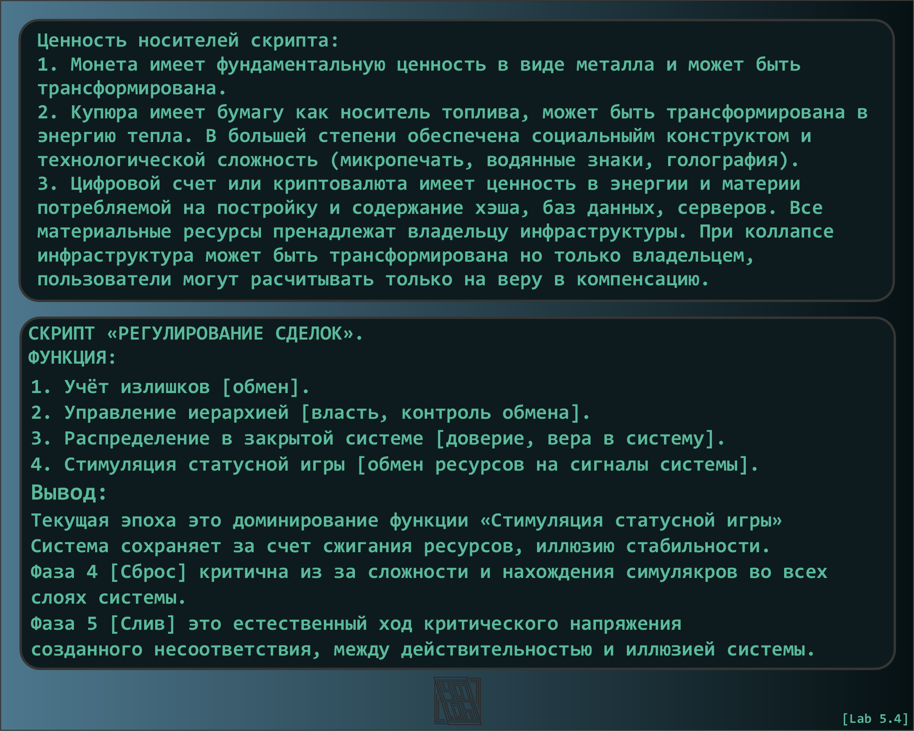
Ценность носителей скрипта: 1. Монета имеет фундаментальную ценность в виде металла и может быть трансформирована. 2. Купюра имеет бумагу как носитель топлива, может быть трансформирована в энергию тепла. В большей степени обеспечена социальныйм конструктом и технологической сложность (микропечать, водянные знаки, голография). 3. Цифровой счет или криптовалюта имеет ценность в энергии и материи потребляемой на постройку и содержание хэша, баз данных, серверов. Все материальные ресурсы пренадлежат владельцу инфраструктуры. При коллапсе инфраструктура может быть трансформирована но только владельцем, пользователи могут расчитывать только на веру в компенсацию. СКРИПТ «РЕГУЛИРОВАНИЕ СДЕЛОК». ФУНКЦИЯ: 1. Учёт излишков [обмен]. 2. Управление иерархией [власть, контроль обмена]. 3. Распределение в закрытой системе [доверие, вера в систему]. 4. Стимуляция статусной игры [обмен ресурсов на сигналы системы]. Вывод: Текущая эпоха это доминирование функции «Стимуляция статусной игры» Система сохраняет за счет сжигания ресурсов, иллюзию стабильности. Фаза 4 [Сброс] критична из за сложности и нахождения симулякров во всех слоях системы. Фаза 5 [Слив] это естественный ход критического напряжения созданного несоответствия, между действительностью и иллюзией системы.